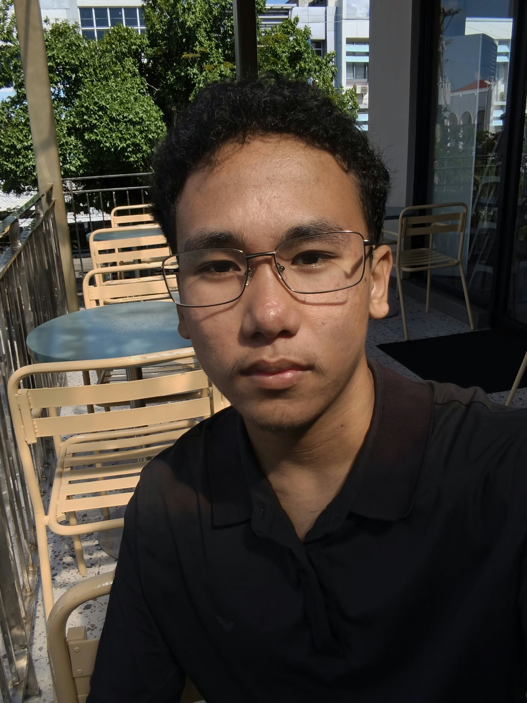
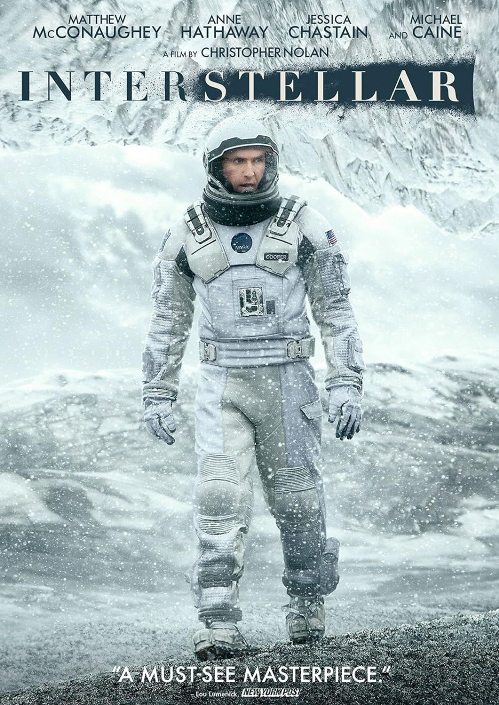
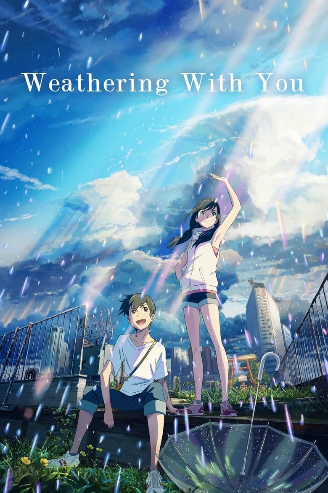
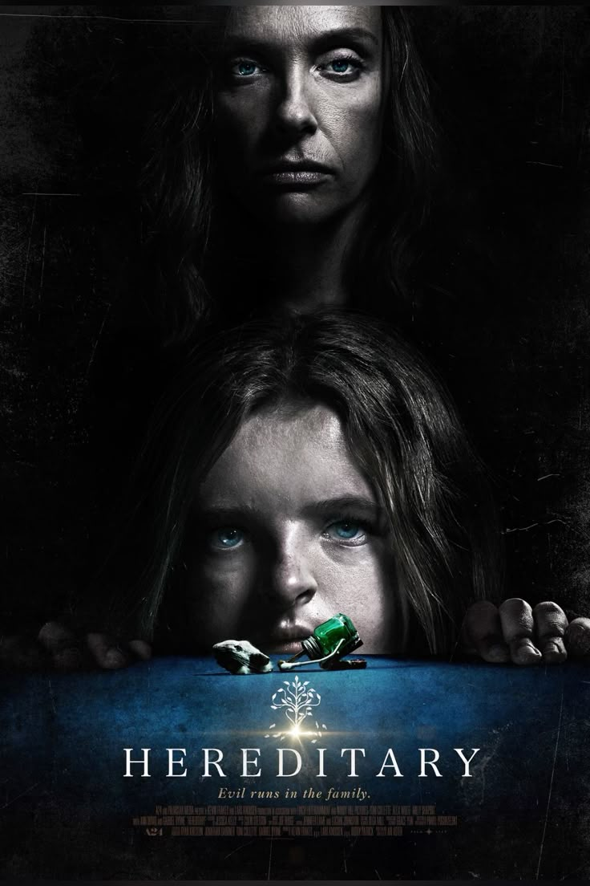
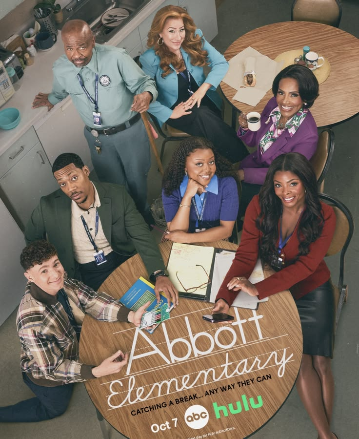
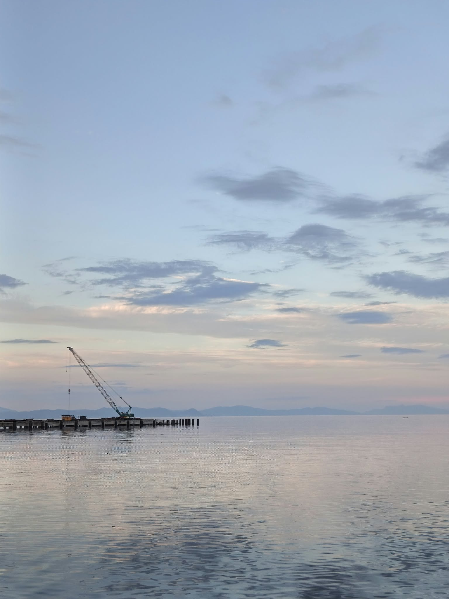
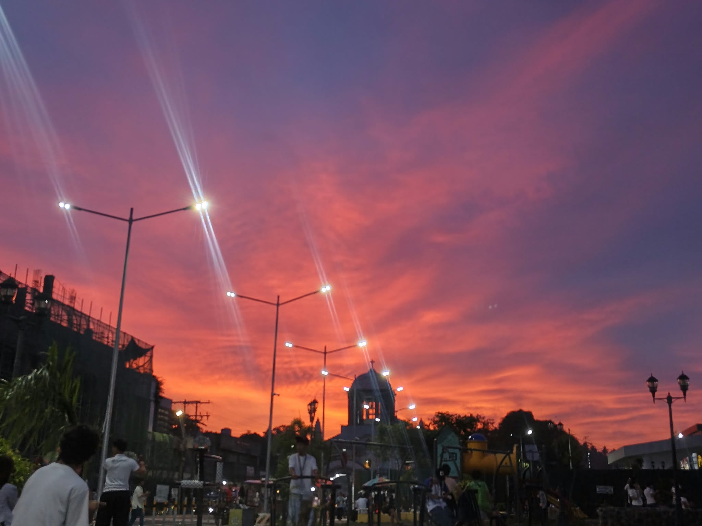

Welcome to my page mga buseng, here you can have a quick look at my interests, hobbies, and goals. I hope you enjoy your stay! (Wala ba kanin Buseng?)
Hello

Hello! You can call me Ray. I am the first-year representative of BU ACCeSS and a student at Bicol University. I am currently pursuing a degree in BSCS (Bachelor of Science in Computer Science). I am passionate about people, stories, and helping others. I hope that I can work my passion into a career that allows me to make a positive impact in the world.
About Me
I'm the type of person that wants to live and not simply survive. I enjoy stories in every form, whether I am watching them, reading them, or writing them myself.
Hobbies
- Watching Movies
- Reading Books
- Writing Novels and Literacy
A Typical Day
A typical day for me is waking up at 12:00 PM if there are no classes in the morning, then I would have my breakfast and take a shower. After that, I would go to my classes and then go home to rest. If there are no classes, I would spend my time reading or writing stories as well as playing Mobile Legends and, of course, doomscrolling.
"Is it better to speak or to die?"
My Path into Computing
I chose BSCS because it sounded cool, and I never expected to pass. Bicol University wasn’t my first choice. I wanted to go to Far Eastern University, but that meant living with a relative, which didn’t sit right with me. My other option was the state university near my home in Sorsogon, but BU gave me what I wanted: far enough to be independent, close enough to still be near home. Here, I feel free to explore who I am without being judged by my family, and that freedom is what lets me explore computing on my own terms. Something about this place feels like a calling. I don’t know the reason yet, but I believe it’s tied to my path in computing, and I’ll find out soon enough.
Ask me about...
What is your favorite place to hang out?
Mountains and beaches, because it gives me this sense that everything is too big for me to care about. I feel like a small part of a bigger picture, and it makes me feel free.
Favorites and Skills
Reading and Writing
One website I enjoy visiting is Medium because here I can find interesting articles that are both eye opening and suited to my interests.
My Favorites
- Favorite movie: Interstellar and Weathering with You
- Favorite book: The Silence of the Lambs
- Favorite app or tool: Spotify and TikTok
Skills I Am Building
| Skill | Level | Notes |
|---|---|---|
| HTML and CSS | Beginner | Hard but Essential |
| Writing | Pro | Still has room for improvement |
| Calculus | Beginner | Hardest among all |
My All-Time Top 5
Most enjoyable movies and TV shows that I have watched in my life. I have a lot of favorites, but these are the ones that I can watch over and over again.
Top 3 Movies
-

Interstellar -Masterpiece -

Weathering with You -Comfort movie -

Hereditary -The best horror movie created
Top 3 TV Shows
-
 Modern Family -Funny and heartwarming
Modern Family -Funny and heartwarming -
 Stranger Things -Great sci-fi series
Stranger Things -Great sci-fi series -

Abbott Elementary -Just wow
Places I Love to Go
Places that gives me the wow.




My Class Schedule
| Subject | Day | Time |
|---|---|---|
| CS 101: Introduction to Computing | Wednesday | 9:00 AM - 12:00 PM |
| CS 102: Computer Programming 1 | Monday and Wednesday | 4:00 PM - 7:00 PM |
| Phys 1: Physics for Computing | Tuesday and Thursday | 1:00 PM - 3:00 PM |
| Math 101: Mathematical Analysis | Tuesday and Thursday | 3:00 PM - 5:00 PM |
| GEC11: Understanding the Self | Friday | 9:00 AM - 12:00 PM |
| PATHFit 1 | Saturday | 4:00 PM - 6:00 PM |
| NSTP 11: CWTS | Saturday | 9:00 AM - 12:00 PM |
Goals
My Top 3 Goals
- To be the reason why a person feels seen
- To help with the very best I can
- To live unconditionally without conditions
What I Hope to Learn in the Next Few Years
To be someone who isn't burned out in the process of learning and to be able to help others in their process of learning. I hope to learn how to be a better person and to be able to help others in their journey of learning.
Reflection
What I Improved from My About Me Activity
- I edited a lot faster than the first time I did this activity.
- I was more organized and structured in my approach.
- I paid more attention to the details and formatting.